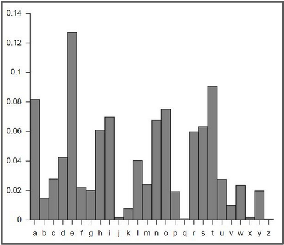
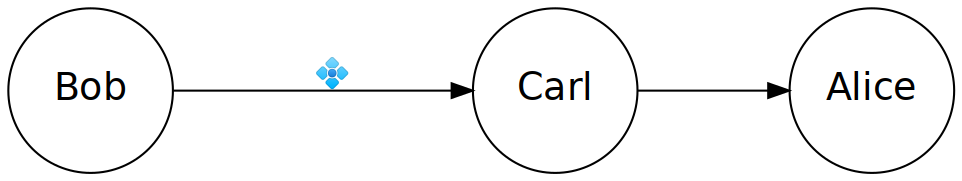
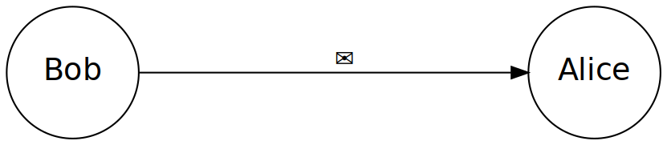
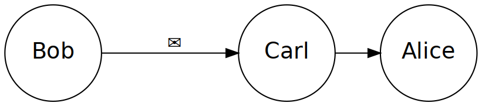

Текст: "khoor"
...
2 - 'ifmmp'
3 - 'hello'
4 - 'gdkkn'
5 - 'fcjjm'
6 - 'ebiil'
...Python 3
Урок #9
Brute Force, RSA
Brute Force
це спосіб зламування шифрів підбором
Текст: "khoor"
...
2 - 'ifmmp'
3 - 'hello'
4 - 'gdkkn'
5 - 'fcjjm'
6 - 'ebiil'
...Завдання 9.1
Напишіть Brute Force для шифра Цезаря
Частотний криптоаналіз
це інший спосіб зламуваня шифрів, заснований на аналізі того, як часто зустрічається кожна літера

bla bla blaw - 7.28%
i - 11.02% # <--- найчастіша!bla bla bla decryptedЧому це працює не на всіх шифрах?
Ваші запитання
RSA
Усне завдання


RSA
це криптосистема, яка для шифрування використовує публічні та приватні ключі.
Принципи роботи RSA
Є 2 ключі:
Публічний - можна давати його кому завгодно
Приватний - треба тримати у себе і нікому не показувати
Повідомлення зашифровується лише публічним, а розшифровується лише приватним.
Принцип роботи RSA


Ваші запитання
Завдання 9.3
В цьому завданні ви зможете спробувати RSA
Генерація ключів
> import rsa
> public_key, private_key = rsa.newkeys(512)
> public_key
PublicKey(blablablla)
> private_key
PrivateKey(blablalblla)Прискорення генерації
> import rsa
> public_key, private_key = rsa.newkeys(512, poolsize=8)Таблиця
Шифрування
import rsa
public_key, private_key = rsa.newkeys(512, poolsize=8)
message = 'Hello world!'.encode('utf8')
crypto = rsa.encrypt(message, publick_key)Розшифрування
import rsa
public_key, private_key = rsa.newkeys(512, poolsize=8)
message = 'Hello world!'.encode('utf8')
crypto = rsa.encrypt(message, publick_key)
print(crypto)
original_message = rsa.decrypt(crypto, private_key)
original_message = original_message.decode('utf8')
print(original_message)Проект 8
Додайте RSA в програму з шифрами.
Зробіть можливість вибрати довжину ключа.
Перевірте, чи збільшиться час генерації ключа удвічі, якщо збільшити його розмір удвічі.